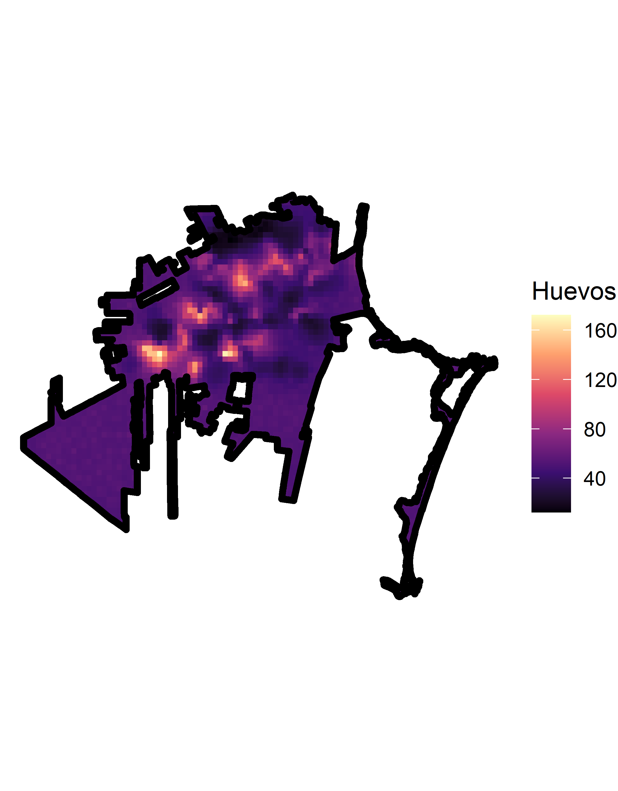
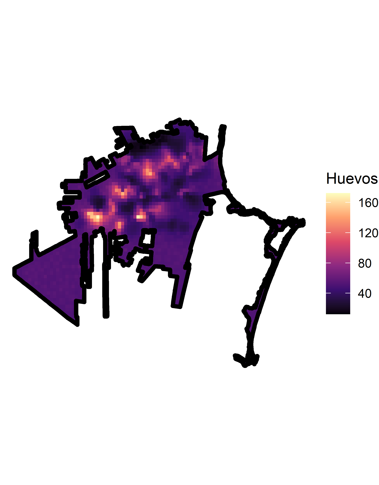
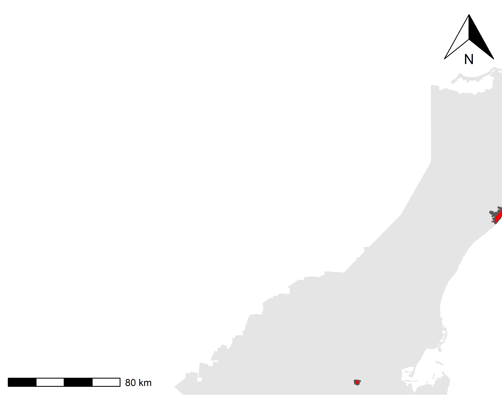
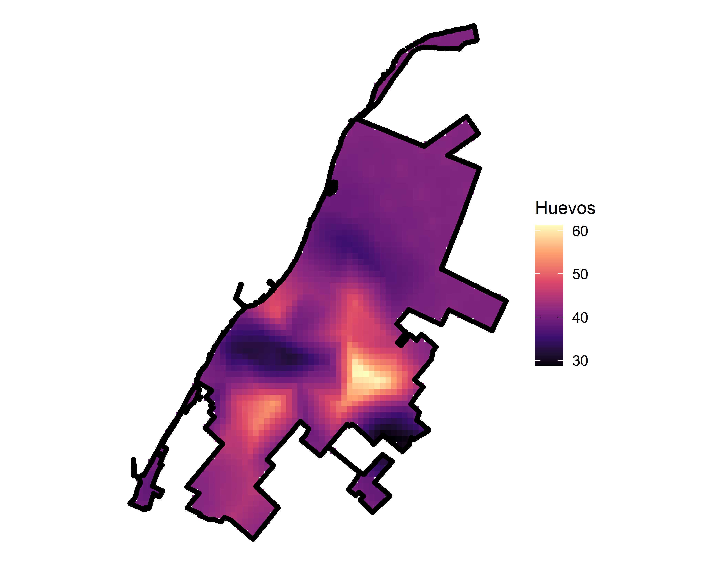

Vigilancia Epidemiológica
Column
Casos por Estado
Treemap de casos confirmados

Casos confirmados y serotipos
Casos confirmados por semana
Casos Confirmados

Casos Confirmados por JS & Municipio
Casos por Semana & Jurisdición
Casos por Semana & Municipio
Hospitalizados por JS & Municipio
Casos Hospitalizados por Semana & Jurisdición
Casos Hospitalizados por Semana & Municipio
Canal Endémico
Canal Endémico Estatal
Canal Endémico Jurisdicción Juárez
Canal Endémico Jurisdicción Chetumal
Canal Endémico Jurisdicción Felipe Carrillo Puerto
Distribución de Casos
Vigilancia Entomológica
Column
Ovitrampas
Áreas urbanas con Vigilancia Entomológica

Indicador de Ovitrampas en Chetumal

Predicción del Número de Huevos en el área urbana de Chetumal en la semana 39
Indicador de Ovitrampas en Cancún

Predicción del Número de Huevos en el área urbana de Cancún en la semana 39
Indicador de Ovitrampas en Cozumel

Predicción del Número de Huevos en el área urbana de Cozumel en la semana 39
